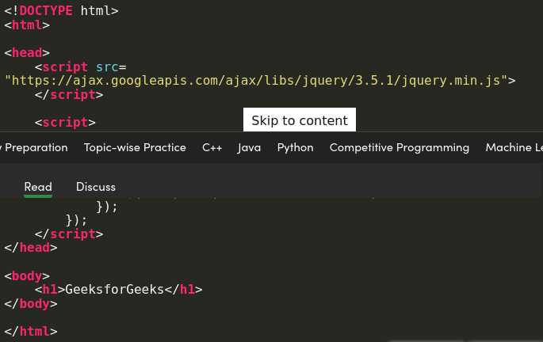

What is jQuery:
jQuery is an open-source JavaScript library that simplifies the interactions between an HTML/CSS
document, or more precisely the Document Object Model (DOM), and JavaScript. Elaborating the terms,
it simplifies HTML document traversing and manipulation, browser event handling, DOM animations,
Ajax interactions, and cross-browser JavaScript development.

Example:

Output:

Why use it:
- It helps us to manipulate HTML and CSS
- It helps us to manipulate DOM (Document Object Model) elements
- Provides event methods to trigger and respond to an events on a html page such as mouse click, keypress etc.
- Implements AJAX calls.
Advantages:
- Wide range of plug-ins that allows developers to create plug-ins on top of the JavaScript library.
- Large development community.
- It is a lot easier to use compared to standard javascript and other javascript libraries.
- It lets users develop Ajax templates with ease. Ajax enables a sleeker interface where actions
can be performed on pages without requiring the entire page to be reloaded.
- Being Light weight and a powerful chaining capabilities makes it more strong.
Disadvantages:
- While jQuery has an impressive library in terms of quantity, depending on how much customization you
require on your website. The functionality may be limited thus using raw javascript may be inevitable in some cases.
- The JQuery javascript file is required to run the commands, while the size of this file is relatively
small (25-100KB depending on the server). It is still a strain on the client computer and maybe
your web server as well if you intend to host the script on your own web server.